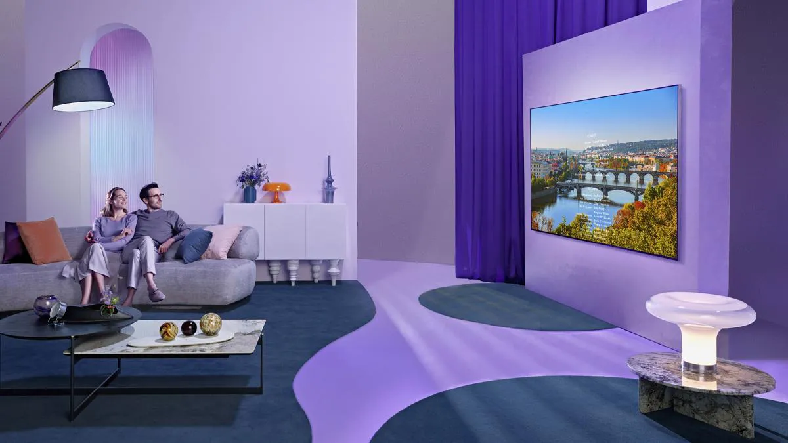

CHAVARRY VALLE JHOSEP DAVID
Mi web personal
Noticias
El reto es mejorar las conexiones mediante la tecnología
En el mundo actual, a pesar de todos los avances tecnológicos adoptados, las conexiones humanas han demostrado ser el objetivo más perseguido. Por ello, establecer una relación basada en la comunicación marca-cliente propiciará una experiencia de cliente positiva gracias a las conexiones establecidas por la tecnología. En Arval España, no pierden de vista el factor humano a la hora de establecer una relación con sus clientes. Pero, ¿cómo lo consiguen? Arantxa Hernando, directora de CX y transformación de negocio de la compañía, nos cuenta sobre ello.
LG QNED MiniLED: nueva tecnología para ofrecer una experiencia audiovisual ultramejorada
Los nuevos televisores LG QNED MiniLED van a suponer una nueva era en lo que se refiere a los dispositivos con panel LCD, ya que logran una calidad, un color y una experiencia audiovisual ultramejorada. La nueva era de televisores LCD de LG consigue, gracias a la combinación de las mejores tecnologías LED, Quantum Dot y Nanocell+, una colorimetría con un mayor rango y un contraste realmente bueno, con certificados de 100% volumen de color y 100% consistencia de color. Esto permite al espectador disfrutar una mejor visualización de la pantalla con unas imágenes donde prima el sentido de la vista, adaptándose en su totalidad a la demanda de la persona que está viéndola.